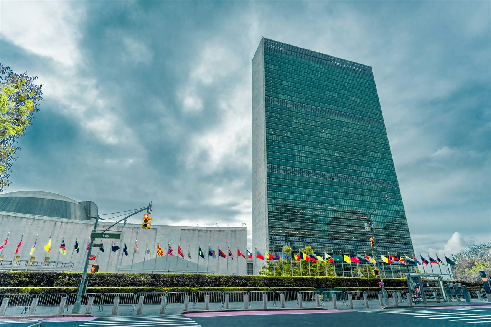

Partnering to Shape Your Work

Contribute to UN Regional and Global Forums
To maximize your impact at the United Nations (UN) through strategic and targeted interventions, we help you take the next step—amplifying your work so it gains visibility and influence with decision-makers.

Your Work Starts Online
To maximize your impact at international and regional forums addressing environmental and human rights issues, strategically planned and targeted interventions are essential. We support you with the tools and guidance you need to prepare strong inputs, build momentum, and engage effectively.

The Human Rights Council
The Human Rights Council is the principal United Nations body responsible for strengthening the promotion and protection of human rights around the globe.

Our Work
With well over a decade of experience in multiple roles within the United Nations, we bring a deep understanding of how NGOs and civil society operate.

Human Rights Training
Human rights are universal, indivisible, and inalienable. They are inherent to every individual, cannot be lawfully taken away, and are mutually reinforcing—with each right carrying equal significance. Our training strengthens advocacy skills and helps participants engage safely and effectively in complex multilateral settings.

Engage the Media
Media engagement is a powerful tool for advancing human rights. Sharing credible information and raising public awareness can play a vital role in protecting communities and prompting informed public action.
Global Stories

Global Challenges and Localized Solutions
Non-governmental organizations (NGOs) are essential drivers of localized solutions that address some of the world’s most pressing challenges. By designing specialized measures for the most vulnerable communities, through systems of representation, economic empowerment, or cultural and political participation, NGOs create models that can often be adapted and applied across diverse global contexts.
Yet, many of these solutions remain local and invisible to the wider international community. To maximize their impact, they must be brought to global arenas, including the United Nations, regional human rights forums, and sustainable development mechanisms, where they can be shared, amplified, and adapted. Lessons from the Sahel region, for example, may soon provide solutions for areas struggling with climate-related agricultural challenges.

What Drives Change?
Facts alone are rarely enough. While research and data are the foundation of solutions based approaches, it depends to an equal degree how effectively they are communicated. Bridging the gap between community perspectives, scientific evidence, and actionable solutions is essential to translate knowledge into frameworks that work locally, regionally, and globally.
To inspire meaningful action, innovative ways of sharing knowledge are needed. While statistics and studies are vital, creative approaches—such as exhibitions, cultural performances, and interactive dialogues with decision-makers—can amplify understanding and make solutions tangible and memorable.
Experience and guidance can help NGOs and civil society organizations navigate these avenues, while maintaining connections with UN agencies, permanent missions, and informal UN interest groups.

Navigating UN ECOSOC and Human Rights Advocacy
Successfully engaging with the United Nations (UN) requires a deep understanding of its complex procedures, from the Economic and Social Council (ECOSOC) to the Human Rights Council (HRC). This guide provides a strategic roadmap for parliamentarians and non-governmental organizations (NGOs) seeking to maximize their impact on global policy.

The Roadmap to 2026: Accelerating SDG 6
The December 2026 UN Water Conference offers a chance to turn global commitments into practical delivery on water and sanitation.

Defending Human Rights in Practice: Geneva’s UPR and New York’s VNR
With 36 countries presenting VNRs at the High-Level Political Forum in 2026 and 42 undergoing UPR review in Geneva, here is what distinguishes the two mechanisms and why it matters for advocates.